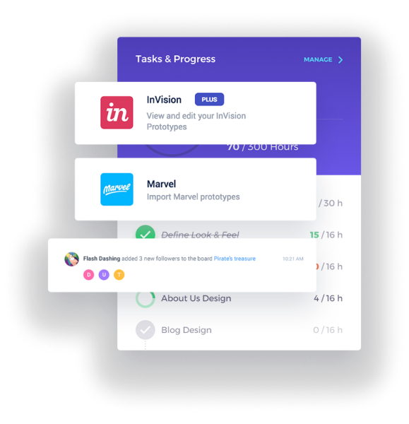

<section class="operations">
    <div class="operations-container">
        <div class="operations__img">
            
        </div>
        <div class="operations__content">
            <h2 class="operations_title">Perfect for Operations HR and Finance</h2>
            <p class="operations_text">Most calendars are designed for teams. Slate is designed for freelancers who want a simple way to plan their schedule.</p>
            <a class="process_button_pr" href="#">Button</a>
        </div>
    </div>
</section>